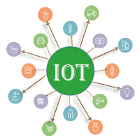
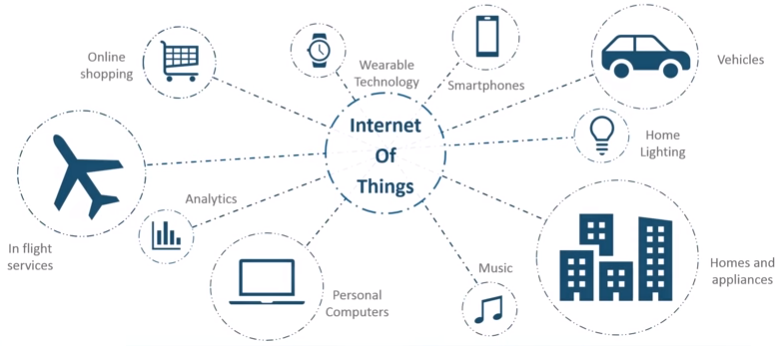
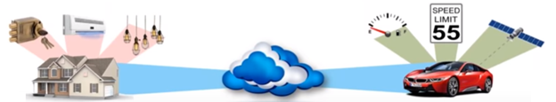
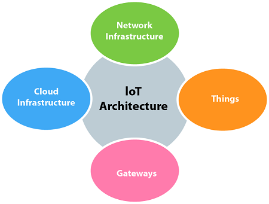

SVREC Technologies
SVREC TechnologiesIoT (Internet of Things) Tutorial
IoT tutorial provides basic and advanced concepts of IoT. Our Internet of Things tutorial is designed for beginners and professionals. IoT stands for Internet of Things, which means accessing and controlling daily usable equipments and devices using Internet. Our IoT tutorial includes all topics of IoT such as introduction, features, advantage and disadvantage, ecosystem, decision framework, architecture and domains, biometric, security camera and door unlock system, devices, etc.
What is an Internet of Things (IoT)
Let's us look closely at our mobile device which contains GPS Tracking, Mobile Gyroscope, Adaptive brightness, Voice detection, Face detection etc. These components have their own individual features, but what about if these all communicate with each other to provide a better environment? For example, the phone brightness is adjusted based on my GPS location or my direction.
Connecting everyday things embedded with electronics, software, and sensors to internet enabling to collect and exchange data without human interaction called as the Internet of Things (IoT).
The term "Things" in the Internet of Things refers to anything and everything in day to day life which is accessed or connected through the internet.
IoT is an advanced automation and analytics system which deals with artificial intelligence, sensor, networking, electronic, cloud messaging etc. to deliver complete systems for the product or services. The system created by IoT has greater transparency, control, and performance.
As we have a platform such as a cloud that contains all the data through which we connect all the things around us. For example, a house, where we can connect our home appliances such as air conditioner, light, etc. through each other and all these things are managed at the same platform. Since we have a platform, we can connect our car, track its fuel meter, speed level, and also track the location of the car.
If there is a common platform where all these things can connect to each other would be great because based on my preference, I can set the room temperature. For example, if I love the room temperature to to be set at 25 or 26-degree Celsius when I reach back home from my office, then according to my car location, my AC would start before 10 minutes I arrive at home. This can be done through the Internet of Things (IoT).
How does Internet of Thing (IoT) Work?
The working of IoT is different for different IoT echo system (architecture). However, the key concept of there working are similar. The entire working process of IoT starts with the device themselves, such as smartphones, digital watches, electronic appliances, which securely communicate with the IoT platform. The platforms collect and analyze the data from all multiple devices and platforms and transfer the most valuable data with applications to devices.
Features of IOT
The most important features of IoT on which it works are connectivity, analyzing, integrating, active engagement, and many more. Some of them are listed below:
Connectivity:
Connectivity refers to establish a proper connection between all the things of IoT to IoT platform it may be server or cloud. After connecting the IoT devices, it needs a high speed messaging between the devices and cloud to enable reliable, secure and bi-directional communication.
Analyzing:
After connecting all the relevant things, it comes to real-time analyzing the data collected and use them to build effective business intelligence. If we have a good insight into data gathered from all these things, then we call our system has a smart system.
Integrating:
IoT integrating the various models to improve the user experience as well.
Artificial Intelligence:
IoT makes things smart and enhances life through the use of data. For example, if we have a coffee machine whose beans have going to end, then the coffee machine itself order the coffee beans of your choice from the retailer.
Sensing:
The sensor devices used in IoT technologies detect and measure any change in the environment and report on their status. IoT technology brings passive networks to active networks. Without sensors, there could not hold an effective or true IoT environment.
Active Engagement:
IoT makes the connected technology, product, or services to active engagement between each other.
Endpoint Management:
It is important to be the endpoint management of all the IoT system otherwise, it makes the complete failure of the system. For example, if a coffee machine itself order the coffee beans when it goes to end but what happens when it orders the beans from a retailer and we are not present at home for a few days, it leads to the failure of the IoT system. So, there must be a need for endpoint management.